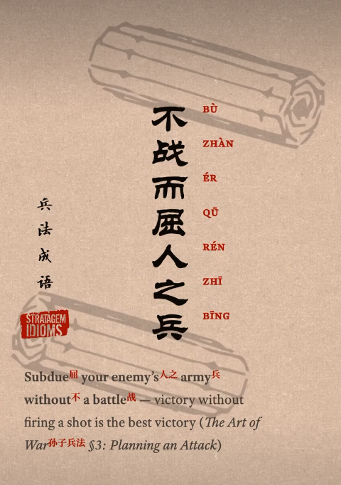
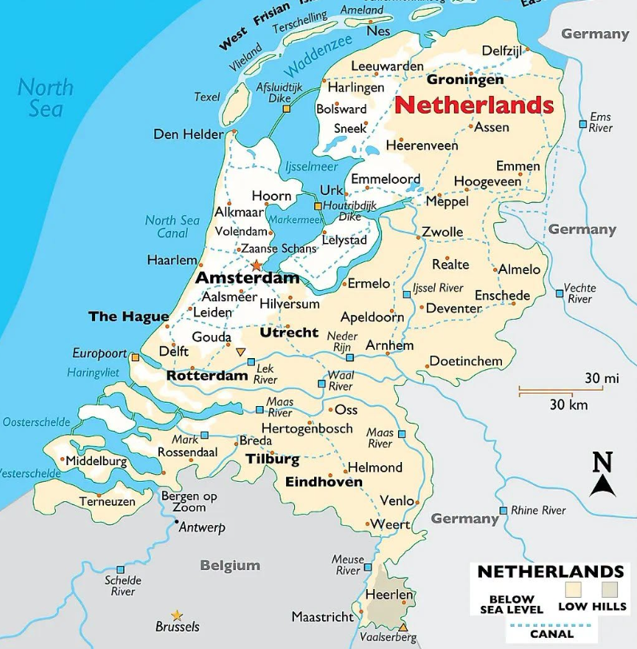
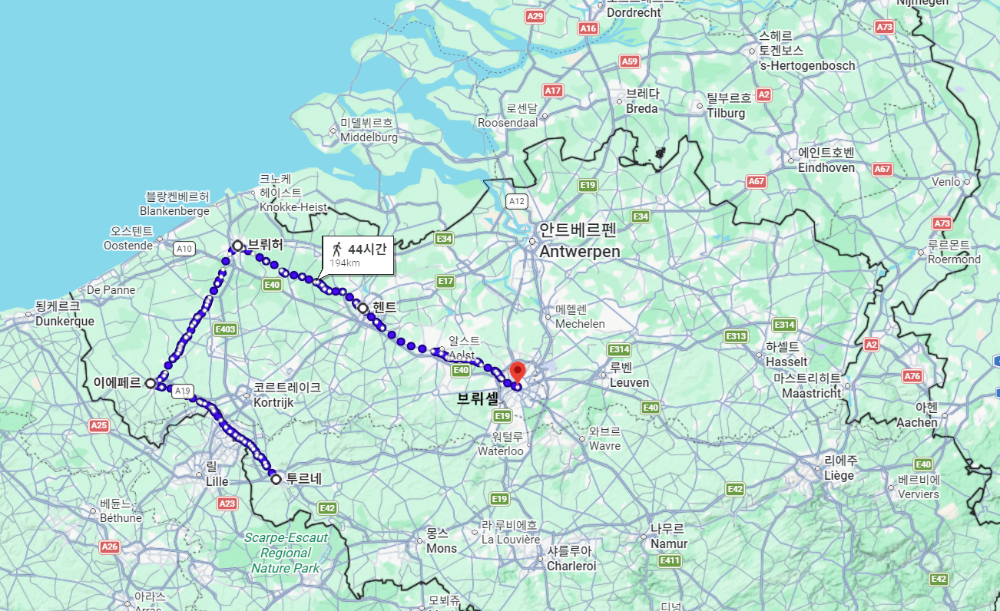
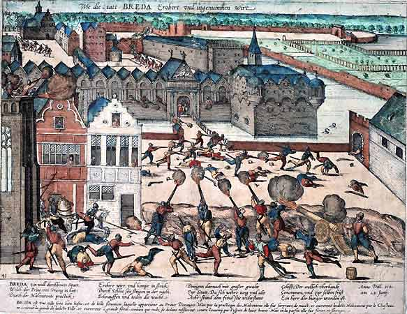
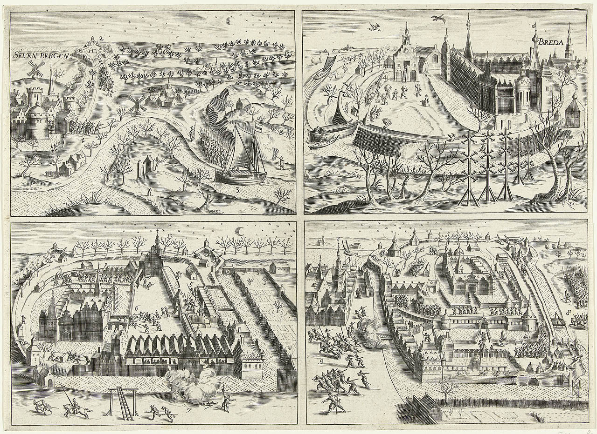
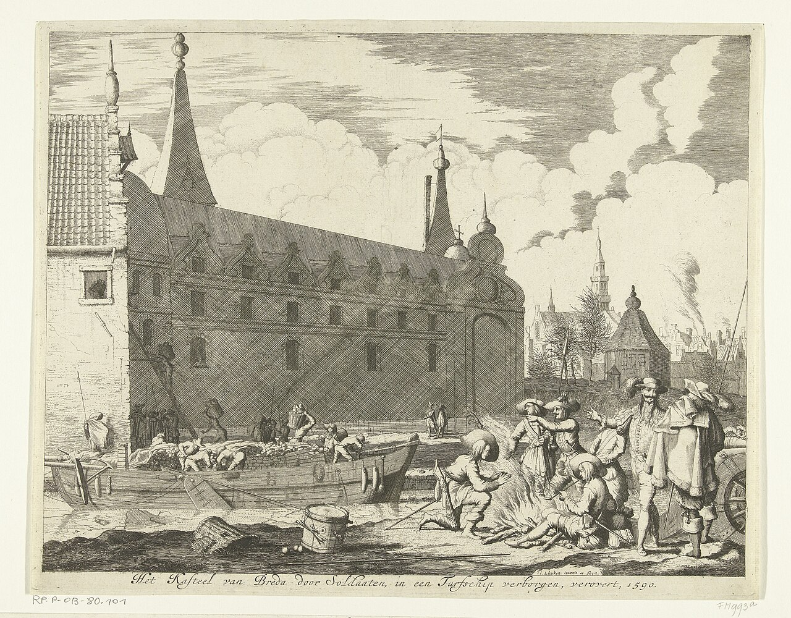
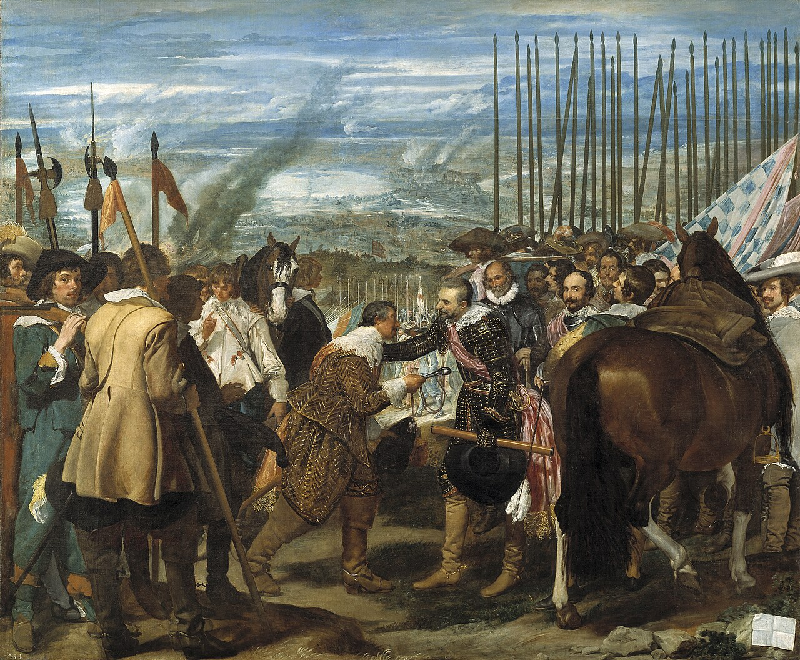
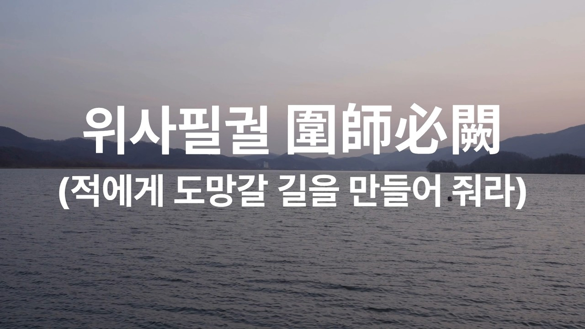

벨기에 이야기 (9) - 브레다(Breda)의 목마
게시: 2026-09-07T06:30:34+09:00
파르마 공작 파르네제가 왈롱 지역을 설득하여 아라스 동맹으로 끌어들일 수 있었던 가장 큰 이유는 왈롱 지역에 상공업이 발달하지 않았기 때문이었습니다. 16세기 후반 저지대에서는 이미 봉건적 질서가 많이 무너진 상태였지만, 여전히 귀족들은 전통적인 토지 기반 경제권을 쥐고 있었고, 도시에서 상업과 공업으로 자본을 축적한 부호들은 평민 출신이 대부분이었습니다. 물론 왈롱 지역, 즉 에노(Hainaut), 아르투와(Artois) 등지에도 발랑시엔(Valenciennes)과 몬스(Mons), 아라스(Arras) 등의 도시들이 있었지만, 더 북쪽의 플랑드르, 브라반트 등의 안트베르펜 (Antwerpen, Antwerp), 헨트 (Ghent), 브뤼허(Brugge, Bruges), 브뤼셀(Brussels), 루뱅(Leuven, Louvain) 등의 쟁쟁한 도시들에 비하면 규모나 경제력, 이름값에서 많이 떨어지는 것이 사실이었습니다. 그만큼 프랑스어를 쓰는 왈롱 지역에는 토지 기득권을 지키고자 하는 카톨릭 귀족이 많았고, 플랑드르와 브라반트 등 네덜란드어 지역에는 상공업에 의존하는 신교 평민들의 세력이 더 컸습니다. 파르네제는 그 신교 평민에게 보장해줄 것이 없었으므로 결국 무력을 써서 이들을 굴복시켜야 했습니다. 하지만 파르네제는 확실히 기존 알바 공작이나 돈 후안과는 전혀 다른 전쟁을 벌였습니다. 당시 전쟁이라는 것은 귀족들의 사업에 가까운 것이었습니다. 싸우는 목적이 도시나 토지, 금화 등의 재화에 있었으므로 대개 전투는 탁 트인 벌판에 양측이 모여서 치르는 결전 형태로 벌어졌습니다. 그리고 도시나 성에서는 그 승자를 새로운 주인으로 인정하여 순순히 입성을 허락하며 성문의 열쇠를 전달하는 것이 일반적이었습니다. 간혹 이야기가 잘 안되는 경우 성이나 요새에서 공성전을 치르기도 했는데, 치열한 공방전 끝에 많은 희생을 내고 성을 함락시키면 병사들에게 며칠간 약탈을 허용하는 것이 불문률이기도 했습니다. 하지만 파르네제는 아예 처음부터 대규모 회전이나 치열한 공성전을 시도하지 않았습니다. 그의 공략법은 의사가 수술을 하듯 정교하고 계산적이어서, 손자병법에 나오는 '싸우지 않고 적을 굴복시킨다'(不戰而屈人之兵)는 원칙을 공성전에 적용한 것이었습니다.

(최고의 전투는 싸우지 않고 이기는 것이고, 최고의 위기 대응법은 위기가 일어나지 않도록 예방하는 것입니다.) 파르네제 전략의 핵심은 차단과 고립이었습니다. 그는 전임자들이 플랑드르 도시들을 쉽게 굴복시키지 못했던 이유가, 부유한 플랑드르의 도시들이 대부분 철저히 요새화 되어있는데다, 그 도시들이 동맹을 맺고 서로 돕기 때문이라는 점을 알고 있었습니다. 지나친 수도권 집중으로 부동산 문제가 심각한 한국과는 달리, 현재 벨기에와 네덜란드의 도시들은 지방 균형 발전이라는 측면에서 매우 모범적인 모델을 제시하는데, 사실 그건 저지대 특유의 역사적 지리적 특성에 힘입은 바가 큽니다. 네덜란드의 경우 대한민국보다 면적이 꽤 작지만, 산지를 뺸 평야만 보면 우리나라와 네덜란드는 면적이 비슷합니다. 그렇게 넓지 않은 국토 거의 전체가 평지라서 여러 도시들이 서로 멀지 않은 곳에 위치해 있고, 또 저지대 특유의 발달된 도로와 내륙 수로 덕분에 이웃 도시와의 병력과 물자 이동도 매우 쉬웠습니다. 그래서 도시들끼리 군사적으로 서로를 지원하기가 매우 편리했던 것입니다.

(네덜란드가 우리나라보다 좁은 것 같지만 우리나라의 산지 빼고 평지 면적만 놓고 보면 3만7천 평방km로 서로 비슷합니다. 그런 네덜란드 인구는 약 1,800만 명이니, 확실히 우리나라보다 체감 인구밀도는 더 낮은 셈이지요. 그런 네덜란드에는 우리나라처럼 수도권에 인구가 과밀하게 집중되는 현상은 없습니다. 그렇게 된 것은 지리, 역사, 정치 등 온갖 요인이 다 반영된 결과인데, 가령 네덜란드는 산지 없이 좁은 평야 지대에 도시들이 오밀조밀 모여 있고 수로 등의 교통이 편리하며, 강이 많아 도시 발전에 필요한 물 걱정도 없기 때문입니다. 네덜란드의 주요 도시들을 인구순으로 나열하면 아래와 같습니다. 암스테르담 931,000명 로테르담 671,000명 헤이그 566,000명 위트레흐트 374,000명 아인트호벤 246,000명 흐로닝언 244,000명 틸뷔르흐 230,000명 알메르 227,000명 브레다 188,000명 네이메헌 187,000명) 파르네제는 플랑드르와 브라반트의 그런 장점들을 하나씩 제거하는 방법을 택했습니다. 즉, 요새화된 도시들을 직접 공격하는 대신, 그 도시로 들어가는 길목의 작은 마을과 보루, 수운 요충지들을 하나씩 점령해 나갔습니다. 도시를 둘러싼 혈관을 하나씩 끊어버린 것입니다. 그는 그런 식으로 먼저 1581년 투르네(Tournai)를 시작으로, 1583년부터 1584년에 걸쳐 이프르, 브뤼허, 헨트를 차례로 고립시켜 항복을 받아냈습니다. 적과 들판에서 자웅을 겨루는 대규모 회전은 자제하면서, 대규모 토목 공사로 요새를 둘러싸고 병력 지원과 식량 공급을 끊어 시간이 걸리더라도 도시가 스스로 항복하게 만드는 방식을 취한 것입니다.

(파르네제의 플랑드르-브라반트 도시들의 공략 순서입니다. 1581년 11월 투르네, 1584년 4월 이프르, 1584년 5월 브뤼허, 1584년 9월 헨트, 1585년 3월 브뤼셀이 차례로 항복했습니다. 1584년 이프르와 브뤼허, 헨트와 브뤼셀이 짧은 기간 안에 연이어 함락된 것을 보실 수 있는데, 이는 이미 여러 도시에 포위기 진행 중이었다가, 상호 지원하던 도시들 중 일부가 함락되자 결국 이웃 도시도 버티지 못하고 줄줄이 사탕으로 무너진 것입니다. 지도에서 보시다시피 브뤼셀 다음은 당연히 안트베르펜이 기다리고 있었습니다.) 특히 파르네제가 위대한 정복자라는 점은 도시가 항복할 때 드러납니다. 힘들고 지루한 포위전 끝에 도시가 함락되면 다른 도시들에게 본보기를 보이고 또 그 동안 고생했던 병사들의 분풀이 차원에서라도 병사들에게 약탈을 허용하는 경우가 흔했습니다. 약탈까지는 가지 않더라도, 최소한 그 도시의 지도층에게 책임을 물어 대표 인사들 몇몇을 처형하는 것이 보통이었습니다. 특히 이 반란과 진압에는 신구교 갈등이라는 종교적 광신이 큰 몫을 차지하고 있었으므로 더욱 그랬습니다. 그러나 파르네제는 달랐습니다. 그는 브뤼허를 함락시켰을 때 농성을 주도했던 시의회의 지도층이나 신교도 대표들의 신변과 명예를 지켜주었고, 단지 공성전에 들인 비용을 배상하라는 조건만 달았습니다. 그리고 시민들에게 카톨릭으로 개종을 요구했지만, 개종을 원치 않는다면 무려 2년의 유예 기간을 줄 테니 재산을 처분한 뒤 다른 도시로 떠나도 좋다는 파격적인 정책을 공표했습니다. 이는 헨트나 브뤼셀을 함락시켰을 때도 비슷하게 지켜졌습니다.

(이런 파르네제의 신사적 공성전이 실행되지 않았던 예가 1581년 브레다(Breda)의 함락입니다. 이 도시는 파르네제가 직접 공성전을 지휘한 곳은 아니었고, 친스페인파 플랑드르 귀족인 베를레이몽(Claude de Berlaymont)이 지휘한 스페인군이 함락시켰습니다. 함락시킨 것도 친스페인파가 성문의 보초를 뇌물로 구워삶아 성문을 열게 하여 함락시켰고, 이어서 벌어진 시가전에서 브레다 시민들은 치열하게 싸우다가 약탈하지 않는다는 약속을 받고서야 항복했는데, 스페인군은 약속을 어기고 수백 명을 학살하고 약탈도 자행했습니다.)
 
(정말 업보라는 것이 있는지, 이렇게 속임수로 함락되었던 브레다는 9년 뒤인 1590년, 또 속임수에 의해 다시 반란군에게 넘어갑니다. 당시 600여 명의 스페인군이 지키고 있던 브레다는 수로를 통하여 보급을 받고 있었는데, 그런 보급품 중에는 떌감인 토탄(peat)도 있었습니다. 그 토탄 수송선 선창에 약 70여 명의 반란군이 몰래 숨어서 성안으로 들어온 뒤, 야밤에 기습적으로 성문을 열고 주력 부대를 끌어들이는 방식으로 브레다는 다시 반란군의 손에 넘어갑니다. 그래서 이 작전을 브레다의 목마 작전이라고 부르기도 합니다.)

(브레다는 파르네제 훨씬 이후인 1624년 8월부터 다음 해 6월까지 계속된 스페인군의 포위 공격 끝에 다시 스페인군 손으로 넘어갑니다. 이때의 항복은 명장 벨라스케스(Diego Velázquez)의 그림으로 영원히 남아 있습니다. 저기서 항복하며 성문 열쇠를 넘겨주는 사람은 빌럼 오라녜의 아들인 유스티누스 판 나사우(Justinus van Nassau)이고, 열쇠를 받는 사람은 제노바 출신의 스페인군 명장 스피놀라(Ambrogio Spinola)입니다. 이 항복 이후 판 나사우는 자유롭게 레이던(Leiden)으로 가도록 허락받았습니다. 그림 오른쪽 맨끝, 스페인군 진영에서 넓은 챙의 모자를 쓰고 콧수염을 기른 남자는 화가 벨라스케스 본인의 모습이라고 합니다. 그러나 이후 브레다는 다시 한 번 반군에게 함락되어 지금은 결국 네덜란드 영토입니다.) 징기스칸의 몽골군은 저항하지 않는 도시는 약탈하지 않았지만 농성하며 저항한 도시에게는 무자비한 학살을 저질렀지요. 그건 공포를 퍼뜨려 아예 저항 의지를 꺾기 위함이었습니다. 그런데 파르네제는 왜 정반대로, '저항해도 최종적으로 항복하면 살 수 있으니 일단 저항하자'라는 생각을 갖도록 저렇게 관대한 정책을 펼친 것이었을까요? 이건 당시의 반란이 종교와 세금에 기반한 갈등으로 벌어진 것이라는 특수성 떄문이었습니다. 다른 문제도 아니고 종교적 신념 때문에 벌어진 것이고, 또 항복하면 시민 개개인들에게 죽도록 내기 싫은 무거운 합스부르크 세금이 부과되는, 당장의 금전적 이익과 직접 결부된 것이다보니 각각의 도시들은 일단 저항을 택했던 것입니다. 특히 1576년 급여 체불로 인한 스페인군의 안트베르펜 약탈 사건으로 인해 스페인군에 대한 신뢰가 땅에 떨어진 상황이라서 플랑드르 및 브라반트의 도시들은 더더욱 저항의 의지가 강했습니다. 그러니 알바 공작이 했던 것 같은 공포 정치는 더 이상 통하지 않았습니다. 그래서 차라리 저항을 하는 도시라고 하더라도, 정말 죽도록 싸울 필요는 없고 방어를 해보다가 질 것 같으면 그냥 부담 없이 항복해도 괜찮다는 인식을 심어주는 것이 차라리 더 나았던 것입니다. 이 역시 손자병법에 나오는 '적을 포위할 때는 반드시 한쪽을 터놓아야 한다' (圍師必闕, 위사필궐)이라는 구절의 의미를 잘 살린 작전이었습니다.

(군사기술의 발전과 무관하게 손자병법이 오늘날까지 읽히는 이유는 이 책이 단순한 군사기술 방법론이 아니라 인간의 본성에 대해 꿰뚫고 있기 때문입니다.)
이렇게 플랑드르-브라반트 지역을 착착 점령해나가던 파르네제가 브뤼셀을 점령하자, 다음 순서는 안트베르펜(Antwerpen, 영어로는 Antwerp, 프랑스어로는 Anvers)이었습니다. 안트베르펜은 여태까지 함락시킨 도시들과는 차원이 다른 곳이었습니다. 그러나 진정한 영웅은 난관에 부딪혔을 때 더욱 빛나는 법입니다. 여기서 파르네제의 명성은 여기서 유럽 전체로 뻗어나갔고, 결국 엘리자베스 1세의 영국까지 저지대의 반란에 참전하는 계기가 만들어지며, 안트베르펜 공방전의 여파는 1588년 스페인 무적함대 사건까지 이르게 됩니다. Source : https://en.wikipedia.org/wiki/Fall_of_Antwerp https://en.wikipedia.org/wiki/Siege_of_Antwerp_(1584%E2%80%931585) https://en.wikipedia.org/wiki/Hellburner https://en.wikipedia.org/wiki/Federigo_Giambelli https://en.wikipedia.org/wiki/Scheldt https://en.wikipedia.org/wiki/Peace_of_M%C3%BCnster https://en.wikipedia.org/wiki/Treaty_of_Fontainebleau_(1785) https://en.wikipedia.org/wiki/Capture_of_Breda_(1581) https://en.wikipedia.org/wiki/Capture_of_Breda_(1590) https://en.wikipedia.org/wiki/The_Surrender_of_Breda